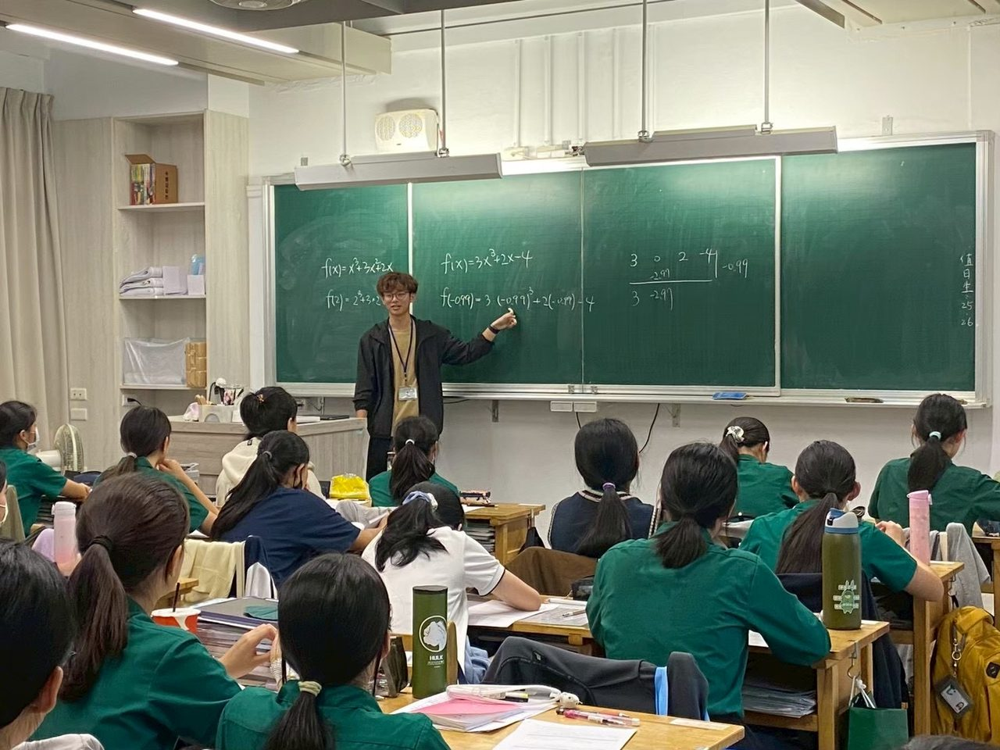
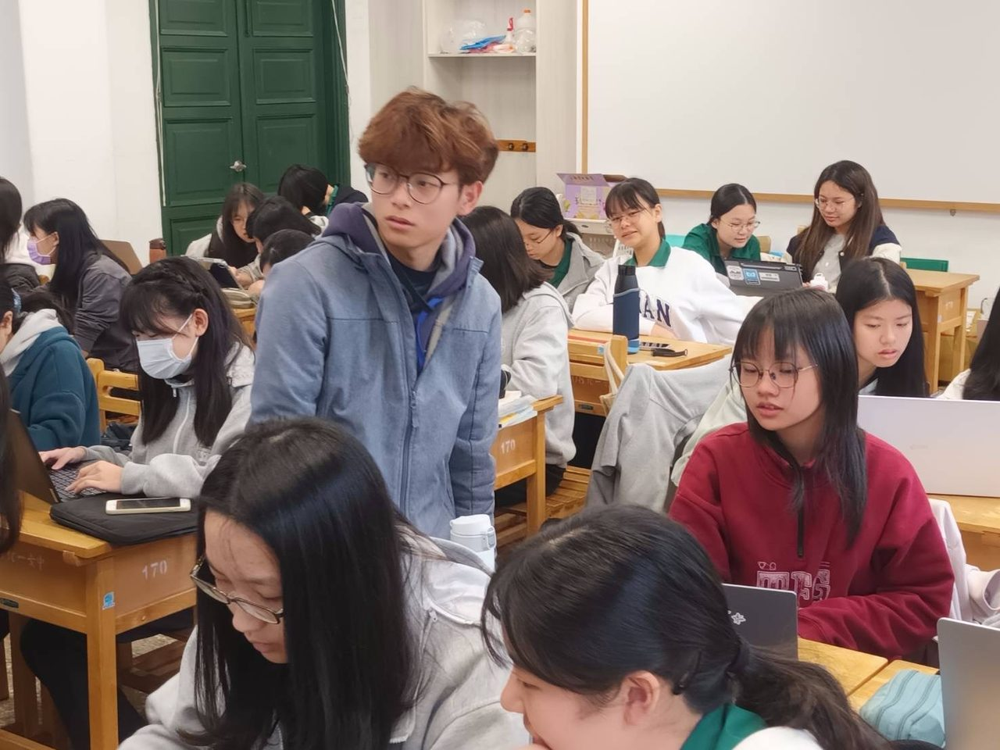
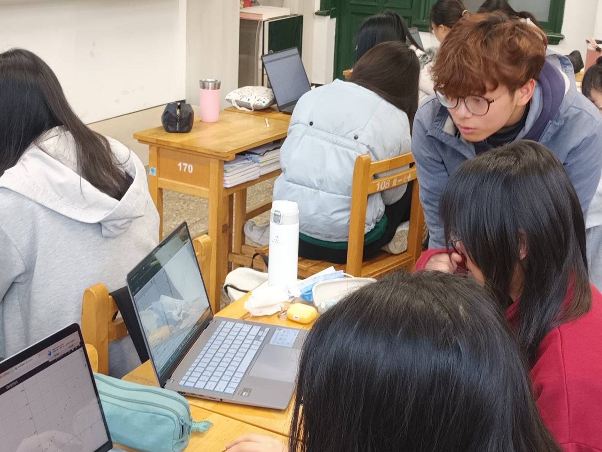
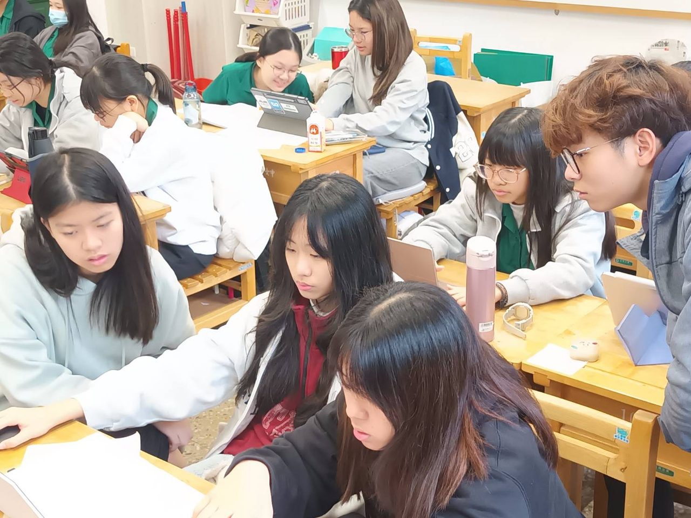
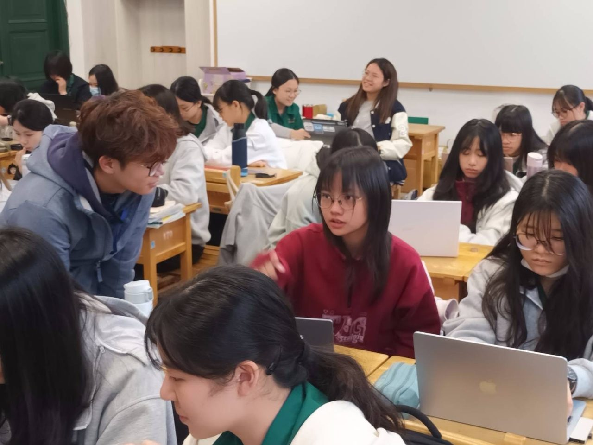
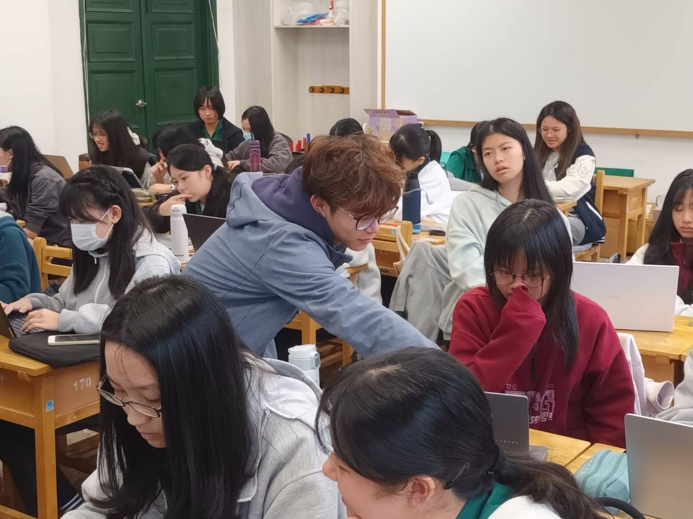

不只一種答案，也不只一種老師。
李明諭
Mathematics · Education · Teaching
用簡單的語言理解數學，從概念建立到解題能力，陪學生建立完整的學習脈絡。
Mathematics
Teaching
Learning Design
Digital Education
PROFILEMathematics · Education · Teaching
TEACHING FRAMEWORK
從情境到結構的學習歷程
從情境建立理解，再把觀念、解題與整理連成可以反覆取用的學習脈絡。
01 · CONTEXT故事／情境
先理解為什麼需要這個數學概念，而不是一開始只看到公式。
02 · CONCEPT建立觀念
用圖像、例子與簡單語言把抽象內容具體化。
03 · REASONING觀念解題
由基本題進入變化題，練習選擇方法，而不是模仿固定步驟。
04 · STRUCTURE重點整理
把公式、題型與想法重新接起來，形成可以再次取用的學習脈絡。
EXPERIENCE
教學經歷
從個別教學、教育實習到高中與補習班課堂，持續在不同的教育現場累積教學經驗。
TEACHING MOMENTS
課堂紀錄
記錄不同教學情境中的課堂互動、板書、討論與個別指導。





